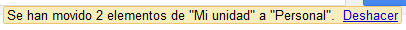

Una vez que hemos creado carpetas, podremos mover los archivos y documentos hacia las mismas para organizar Drive según nuestras preferencias.
Para mover nuestros archivos hacia nuevas carpetas, deberemos seleccionar aquellos que deseamos mover y a continuación hacer clic sobre el icono de la carpeta entre las opciones superiores.
Aparecerá un cuadro donde deberemos seleccionar la carpeta donde queremos mover el o los archivos seleccionados. Para finalizar, debemos hacer clic sobre el botón "Aplicar cambios"
Hecho esto, veremos cómo se ha creado una nueva carpeta que podremos visualizar en el menú izquierdo. Podemos crear tantas carpetas y subcarpetas como queramos.

También podremos arrastrar un elemento y soltarlo directamente en la carpeta donde deseamos moverlo.